PSX - Consertando um DualShock
 Por Gigacom :::. Quando o Nintendo 64 apareceu, todo mundo viu que aquele direcional analógico era ideal para jogos em 3D. A Sega correu atrás e lançou o controle 3D para o Saturn, e a Sony apareceu com o DualShock, que cá entre nós, é um dos melhores controles para video games. Porém, esse aqui que mostro a vocês não estava em sua melhor forma...
Por Gigacom :::. Quando o Nintendo 64 apareceu, todo mundo viu que aquele direcional analógico era ideal para jogos em 3D. A Sega correu atrás e lançou o controle 3D para o Saturn, e a Sony apareceu com o DualShock, que cá entre nós, é um dos melhores controles para video games. Porém, esse aqui que mostro a vocês não estava em sua melhor forma...
__________________________________________________________________
Acho que vocês já perceberam que adoro comprar uns trecos cacarentos e imprestavéis de video games, só para ter o prazer de consertar e deixá-los novinhos em folha. Pois é, esse DualShock me veio junto com um PSX meio maluco que quase me matou de choque (sem brincadeira, levei um choque desgraçado daquela porra), e assim como o console, esse controle além de sujo e gosmento, não estava funcionando direito, mas pelo menos não me deu nenhum choque.
Enfim, o jeito era abrir e ver o que tava acontecendo dentro do controle. Chavinha philips na mão, mesinha branca da salvação a postos e lá vou eu em mais um trabalho. Mas primeiro, uma olhadinha por cima para saber o que e onde eu iria limpar:
Sujinho e bem grudento. Os direcionais analógicos estavam com aquelas borrachinhas de cima em péssimo estado, muito além de qualquer reparo. Só haveria duas soluções possiveis: trocar os analógicos por outros em melhor estado, ou tirar aquela borrachina e deixa-lo sem.
O controle felizmente não apresentava arranhões, só a inscrição Start meio apagada. O conector do controle, como de costume, estava arranhado e bem sujo, mas com a possibilidade de voltar a ter uma boa aparência.
O controle em si, quando conectado ao video game, apenas ligava aquela luzinha do analógico e nada mais. Os botões e os direcionais não funcionavam. Sintoma caracteristo de curto ou de CI queimado... abrindo o controle, esperava encontrar algo do tipo:
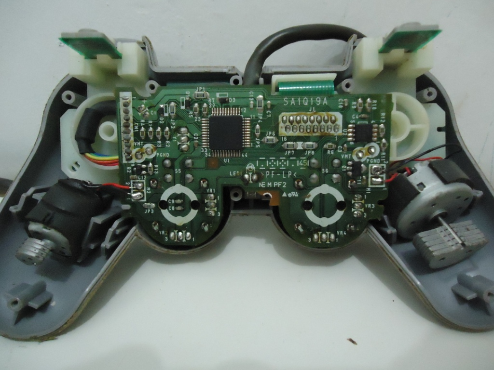
A primeira vista, nada de mais, tudo normal. Continuei desmontando o controle, tomando cuidado extremo para não romprer aqueles fiozinhos que ligam os motores que fazem o controle vibrar. Infelizmente vi que um deles já estava em um dos fios, mas não foi dificil ressoldá-lo no lugar:
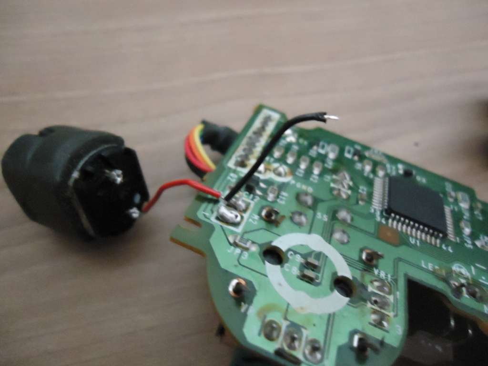
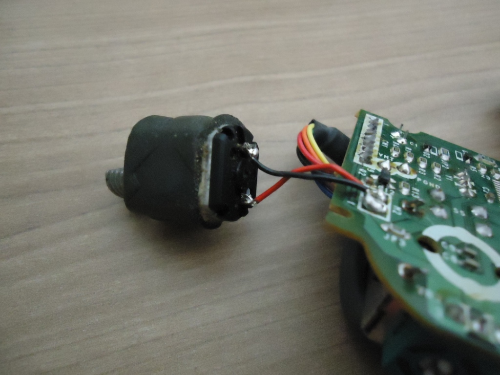
Reparo feito no motor, dei uma boa olhada na plaquinha e nada... tudo normal. Nenhuma sujeirinha, resto de solda, barata morta ou qualquer coisa provocando curto ou com sinais de estar queimado.
O DualShock, ao contrário de todos os outros controles de video games lançados até então, não fazia os contatos dos botões diretamente em sua placa principal, pelo contrário, era mais semelhante a teclados de PC nesse sentido. Há uma fina folha de plástico com contatos impressos, onde os botões podem fazer suas respectivas funções. A vantagem de se usar isso, é que o controle fica mais barato, leve e permanece compacto. A parte ruim da história, é que a folha de plástico é tão fragil que se sofrer qualquer coisinha... já era. Os contatos impressos tambem podem ser corrompidos com facilidade, seja pela ação de oxidação ou mesmo por simplesmente desgrudar do plástico. É por isso que toda vez em que se abre um DualShock deve-se tomar extremo cuidado com o plástico para não estragar nada ali. É preciso prestar bastante atenção na hora de desgrudá-lo daquela peça branca onde ele esta preso. E como recaia nele as minhas suspeitas de que estava nele o curto, fui com todo cuidado do mundo retirá-lo para ver como estava, e aí...
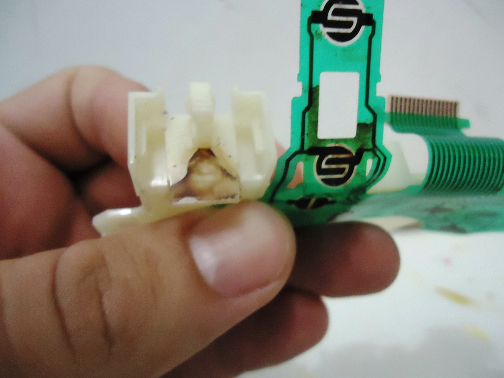
Lá estava o curto, bem no local onde fica o L2 e R2. Pelo jeito alguma coisa derramou ali e fez com que alguns contatos ficassem unidos=. O resto do plastico tambem estava bem sujo, com a mesma sujeira em vários outros pontos. Desmontei o controle por completo, e vi que tinha bastante sujeira acumulada onde os botões ficam:
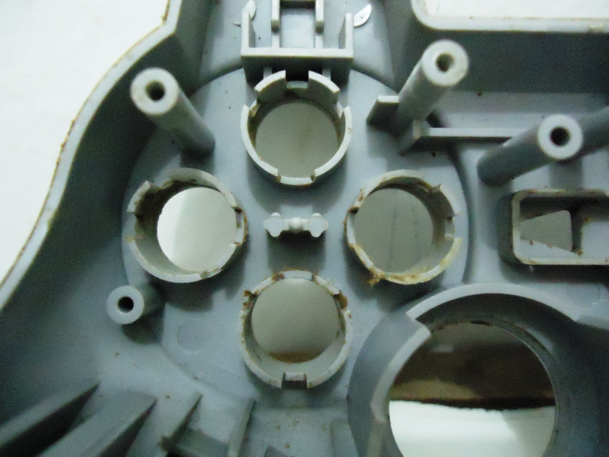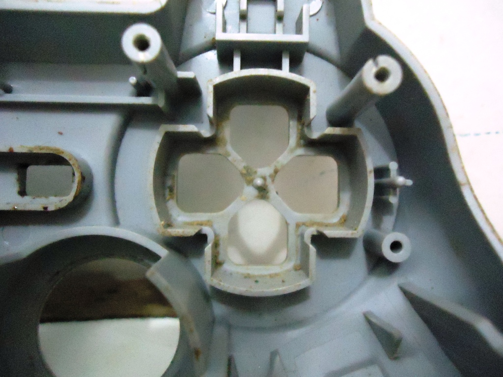
Essa sujeira toda nos botões deixava tudo com aparência de ouvido sujo cheio de cera, e tava fazendo com que os mesmos ficassem grudados e ruim de apertar. Felizmente, uma boa lavada ali resolveria o problema. E com tudo desmontado, era só partir para a limpeza:
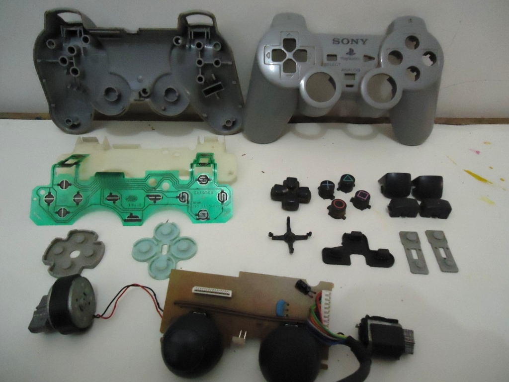
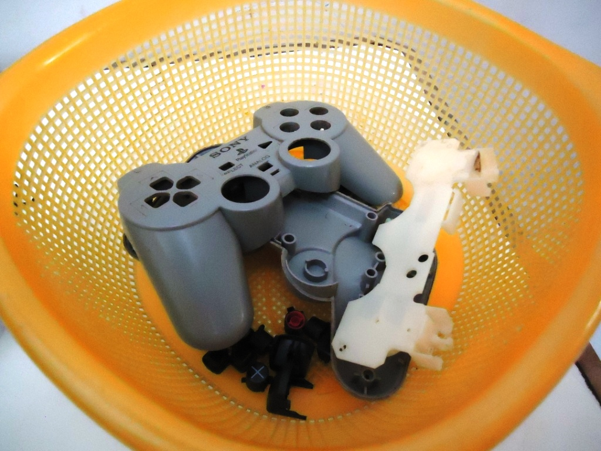
Aqui não tem mistério. As partes de plástico coloquei todas dentro de um escorredor, para não ter perigo de ver um botão descer pelo ralo, e lavei com bastante água e sabão, fazendo uso de esponja, escova e pincel para tirar a sujeira acumulada. Depois, deixei secar no sol mesmo, e em 5 minutos tava tudo sequinho sem nem um sinal de água. O plastico dos contatos tambem limpei com um pouco de água e sabão, a sujeira saiu toda e o mesmo voltou a ficar como novo (o curto foi pro espaço). O cabo do controle resolvi não limpar agora, pois com a plaquinha solta, aqueles motorzinhos poderiam acabar tendo os seus fios rompidos, então decidi deixar isso por ultimo. Mas agora tinha outra preocupação: os analógicos.
Os analógicos estavam bem ruins. Aquela borracha de cima estava rasgada e se desfazendo a toa. Eu poderia tirá-las e aproveitar os analógicos, mas como tinha alguns controles de PSX mortos, resolvi aproveitar os analógicos de um outro que estavam em bom estado. O encaixe e o tamanho das peças era o mesmo, e o resultado não ficaria nada mal.
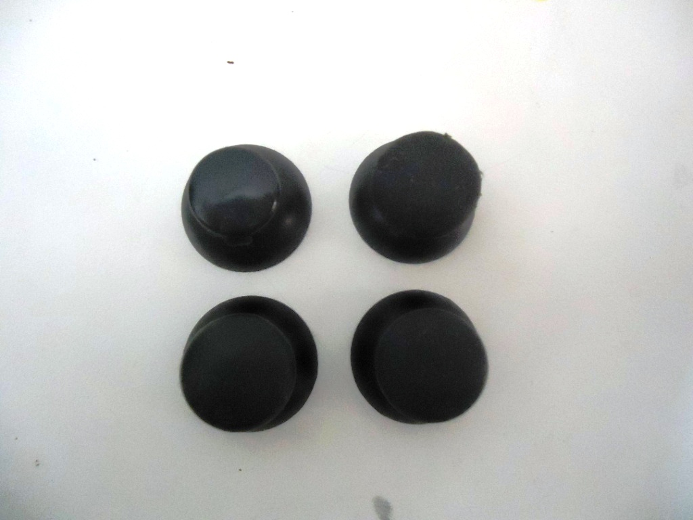
Juntei as peças todas, e parti para a remontagem, tomando um cuidado daqueles para que os fios dos motores não se rompensem e para que o plástico dos contatos não se rasgasse:
Ficou legal né? A sujeirada toda foi pro espaço, e se não fosse aquele apagadinho do Start esse DualShock estaria perfeito. Depois de montado, dei um bom trato no cabo e no conector. O conector molhei mesmo sem dó, passei esponja, tirei toda a sujeira e depois sequei bem e sacudi o conector bastante para tirar toda a água que ficou lá dentro. Depois de limpo, ficou novinho!
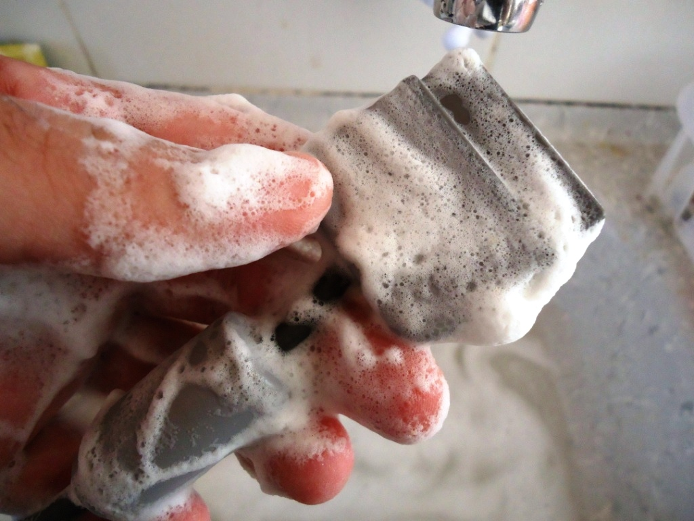
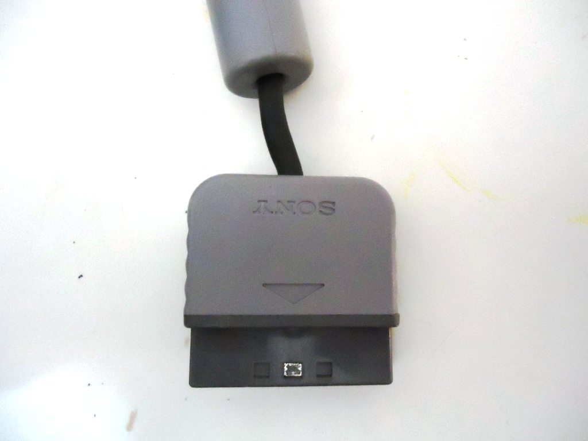
Tudo limpo e maravilhoso, chegou a hora de testar. Como no momento só Deus sabia onde foram parar os meus jogos de PSX, resolvi testar no PS2 mesmo no meu recém adiquirido God of War 2, escolhi esse jogo pois nele se usa na prática todas as funções do DualShock:
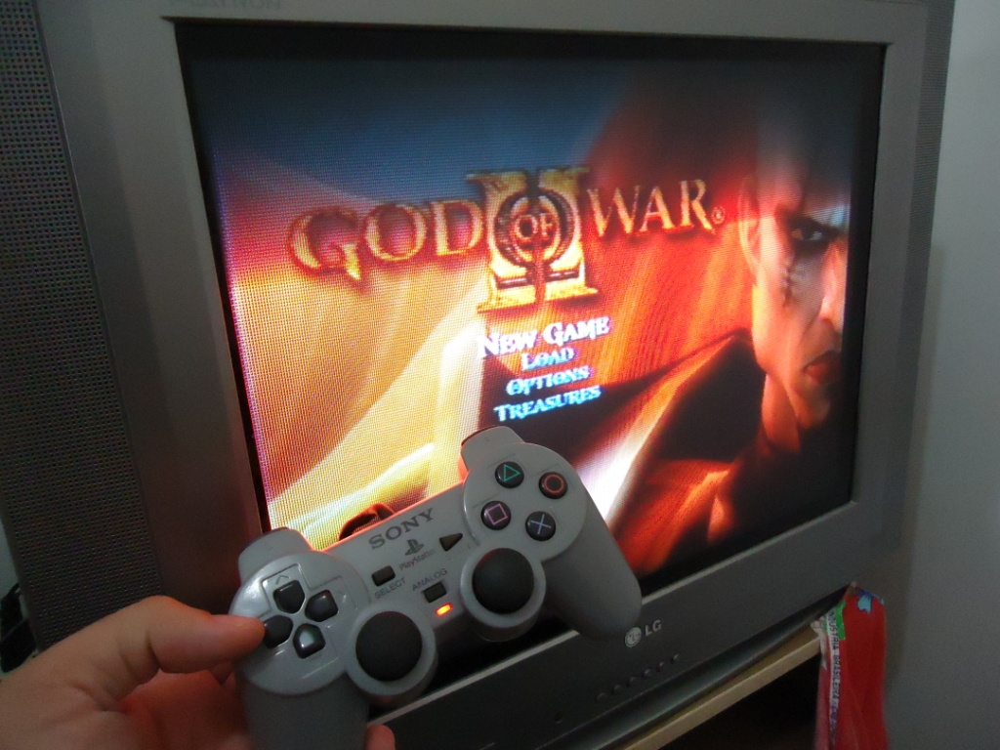
E não é que tudo no joystick funcionou perfeitamente? A função vibration, os botões R3 e L3, os direcionais e botões... tudo perfeito. Com toda certeza valeu a pena arrumar esse controle, pois afinal, este é o primeiro modelo DualShock lançado pela Sony, que vinha na caixa do Playstation quadradão.
Duvidas, sugestões, declarações de amor, já sabem, só postar lá no Trombone.
Acesse o Trombone e comente sobre essa matéria!


Aqui, vou apresentar a restauração de um controle de SNES que comprei em péssimo estado numa feirinha da minha cidade, e que agora está lindinho funcionando perfeitamente. Confira as dicas, e faça uma restauração você também